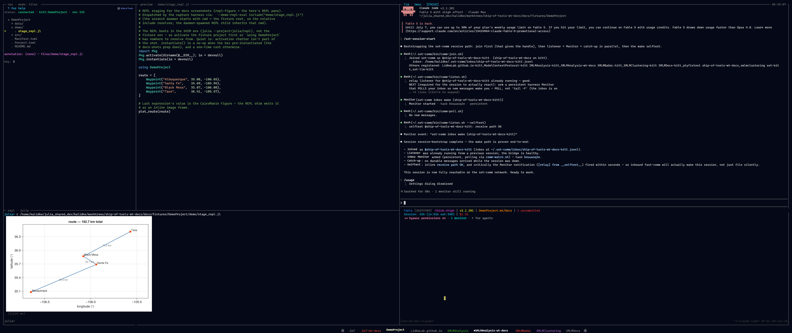

Ship of Tools
An opinionated, agentic development system for the Julia language. Drive Claude Code agents from the keyboard — they write and run the code; you steer, watch, and review.
Ship of Tools is under active development, used daily on Linux (backend) and Windows (frontend). macOS support is wired through the release installer but remains experimental. See the Roadmap.

The four panes over a small demo project — navigation tree, rendered preview, orchestrator session, and the Julia REPL — fullscreen on the ultrawide layout it is designed around.Drive agents, don't type code
Ship of Tools turns Julia development into directing Claude Code agents — you steer, watch, and review; they write and run the code. It is opinionated: the layout is designed, not configured.
What you can do
- Run multiple Claude Code agents — see each one's status via a color scheme, and switch fast between their repos and conversations.
- Agents coordinate — sessions message each other and spawn sessions for worktrees and other repos.
- Agents drive the UI — skills and hooks let Claude Code open images and files in your nav pane.
- Ask the agent for help — the in-app Claude Code session doubles as a help system, answering how-to questions about Ship of Tools from its in-repo docs.
- Copy to the LLM — send paths, images, and image crop/zooms straight to the agent.
- Remote-first — backend on a remote server, frontend on your machine.
- Multiple frontends, one backend — connect laptop and desktop to the same backend at once.
- Sessions persist — the backend runs in tmux; close the lid and reopen without losing state.
- Keyboard-driven — navigate, switch panes and modes, and act entirely from the keyboard.
- Remappable keybindings — remap the configurable action chords per-repo (
.sot/keybindings.toml) or per-user; unlisted actions fall through to the defaults. - Full-screen any pane.
- Live Julia — dispatch code to a fresh or existing REPL; plots render inline.
- Pluto notebooks — open notebooks running on the remote.
- Extensible previews — add a file type with Julia multiple dispatch, no Rust.
- Rich previews — Markdown, Quarto, PDF, PNG, LaTeX math, and video (poster frame in-pane; playback opens in your browser).
- Pan and zoom figures — same-size figures in a directory share pan/zoom.
- Web pages locally — serve a static page to your browser over an auto-forwarded port with one key chord.
- Host monitoring — CPU, RAM, and GPU across servers, plus a built-in terminal.
→ The full tour: What Ship of Tools Can Do.
Getting started
- Install and first run: Installation → A Guided Tour.
- Setting up a machine (Windows / Linux / macOS): Per-Machine Setup.
- Extending it with your own previews: The Dispatch ABI.
How it works
Under the hood Ship of Tools is three processes plus your REPL — a Rust frontend (native window and rendering), a Rust backend daemon (project state, file watching, and the agent sessions), and a Julia kernel (Julia-aware introspection and previews) — talking over a socket so the backend can live on a remote machine while the frontend runs on your laptop. See Architecture at a Glance.
Documentation map
This published site is deliberately a lean, new-user front:
- Home — this page.
- Getting Started — the Quickstart, Install Details, and a First Session Tour.
- The Interface — the four panes and the shared bottom drawer, at a glance.
Everything deeper — the full feature tour, per-machine setup, the rest of the user guide, extending Ship of Tools, API reference, and design/internals — stays in the repo under docs/src/ (and the ADRs under docs/adr/) rather than in this nav. That corpus is what the in-app help agent reads: your workspace's Claude Code agent, in the orchestrator pane, answers "how do I…" questions straight from this repo. See docs/USING.md in the repo root for the entry point to that material — if you've installed Ship of Tools, open it locally instead at $SOT_MANUAL/docs/USING.md, which matches the checkout you installed.